Welcome to the 「CopyGen」AddIn
概要
エンティティのコピー処理を自動生成します。
現バージョンでは下記の仕様となっています。
- 対象言語：C#、VB.NET
- C#、VB.NETの切替は編集中ファイルの拡張子で判断する（.cs=C#、.vb=VB.NET）。
- コンパイル済のクラスが対象（VB.NETのModuleは対象外）
- コピー処理の生成対象となるプロパティはpublic＋get・setの両方をもち、静的(static)ではないもの
- プロパティの型については考慮しない（キャストは出力しない）
お知らせ
- 2011/05/06 Koropokkur.NET 0.2.5をリリースしました（0.2.4とCopyGenの内容は同じです）。ダウンロード
- 2011/03/21 Koropokkur.NET 0.2.4をリリースしました。
- 2010/04/18 Koropokkur.NET 0.2.3をリリースしました（0.2.2とCopyGenの内容は同じです）。
(Koropokkur.NETはこのアドインが含まれるアドイン集です）
アドイン登録方法
アドインの登録方法はこちらをご覧下さい。コピー処理出力内容の設定方法
１．VisualStudioの「ツール」メニューから「Koropokkurの設定」→「CopyGen」を選択します。
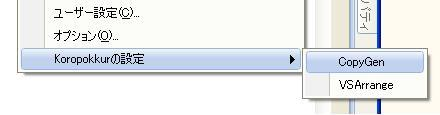２．コピー処理をメソッドとして出力するか、コピー処理の出力するか選択します。
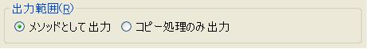３．「public void Hoge(XXX target)」のように出力するメソッドのアクセス修飾子を選択します。

４．「protected virtual void Hoge(XXX target)」のように出力するメソッドの付加設定を選択します。
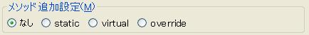５. コピー処理を行うメソッド名を設定します。
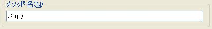６. コピー元のオブジェクトをインスタンスから受け取る（「this」「プロパティのみ」)か
引数から受け取る（「引数」）か選択します。
「this」の場合は「this.プロパティ名」、「プロパティ名のみ」の場合はプロパティのみの形で出力されます。
「引数」で受け取る場合は引数名を設定します。
「Null禁止」チェックを入れている場合はnullチェックコードも出力されます。
７. コピーしたオブジェクトを戻り値として返す（「戻り値」）か、
インスタンスに受け取る（「this」「プロパティのみ」）か、
引数に対して設定する（「引数」）か選択します。
「this」の場合は「this.プロパティ名」、「プロパティ名のみ」の場合はプロパティのみの形で出力されます。
「引数」で受け取る場合は引数名を設定します。
「Null禁止」チェックを入れている場合はnullチェックコードも出力されます。
８. コピー処理を行う直前にこの設定ダイアログを呼ぶ（チェックあり）か呼ばない（チェックなし）か設定します。
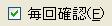使い方
１．コピー処理を生成したいクラスがアクティブになっているエディタ上で右クリックメニューを表示させます。
２．メニューの下の方にある「コピー処理生成」を選択します。
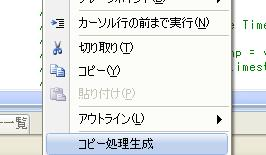
３．設定で「毎回確認」にチェックを入れている場合は設定ダイアログが表示されます。
（「キャンセル」を選ぶとコピー処理の生成を行わずに処理を終わります。
「OK」を押すとコピー処理生成を行います。
「毎回確認」にチェックが入っていない場合も同様です。）
４．設定と選択行の文字列に従ってコピー処理が出力されます。
具体的には下記のように出力内容が変化します。・空文字列、空白、タブのみの場合
生成前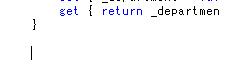
生成後 （開いているファイルと同名なクラスのコピー処理が生成される）
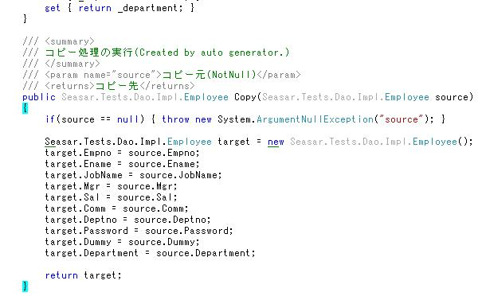
・クラス名を指定した場合
生成前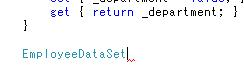
生成後 (指定したクラスのコピー処理が生成される)
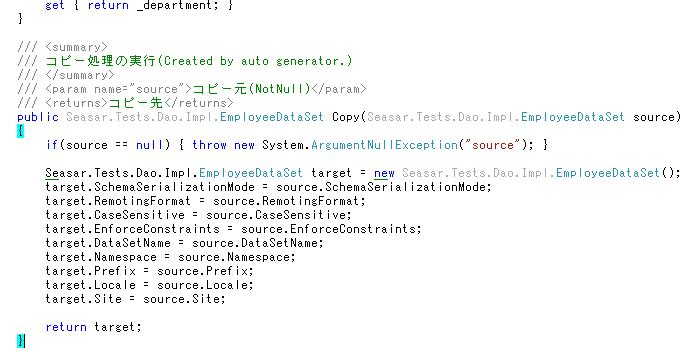
・(クラス名),(空文字列)と指定した場合（カンマで区切る）
生成前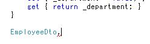
生成後 （指定したクラス→開いているファイルと同名なクラスへのコピー処理が生成される）
(この場合はプロパティ名が同じもののみ出力されます）
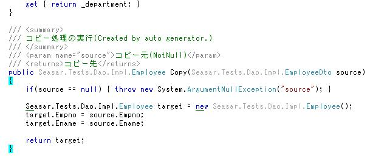
※(空文字列),(クラス名)の場合は
開いているファイルと同名なクラス→指定したクラスへのコピー処理画生成されます。
・(クラス名),(クラス名)と指定した場合（カンマで区切る）
生成前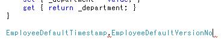
生成後 （「,」の左側のクラス→右側のクラスへのコピー処理が生成される）
(この場合はプロパティ名が同じもののみ出力されます）
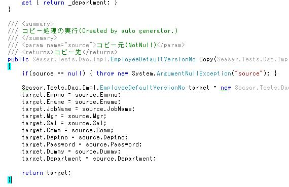
※名前空間付きでクラス名を指定した場合も同様です。